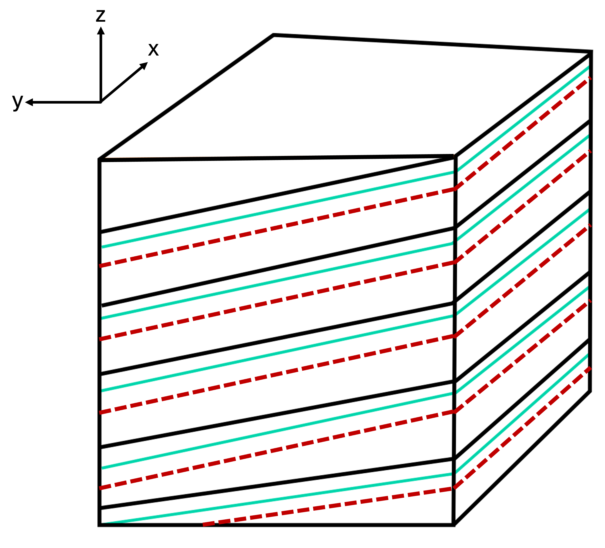
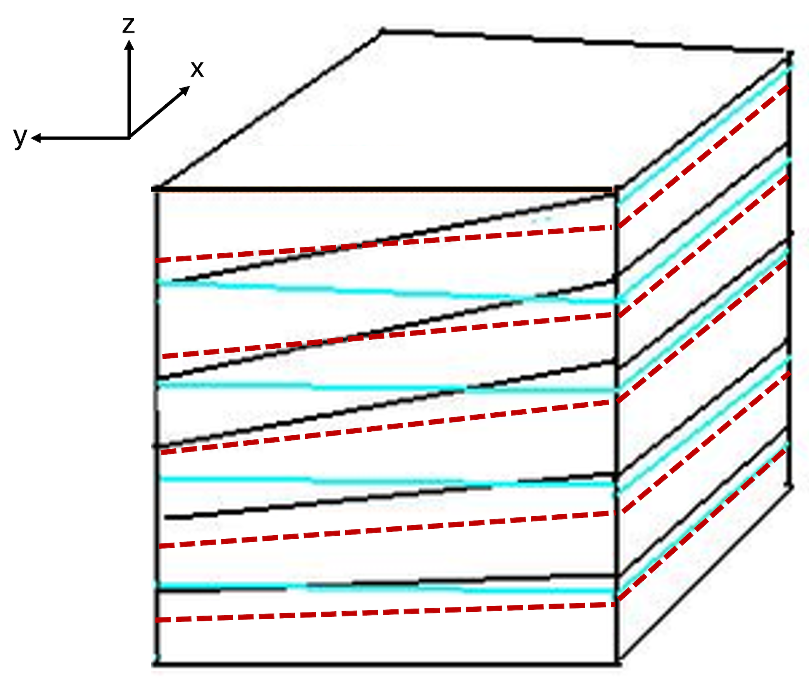
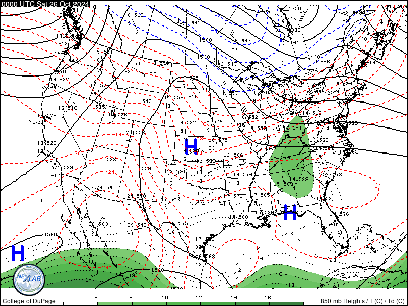
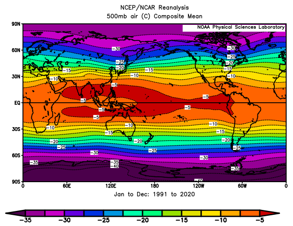
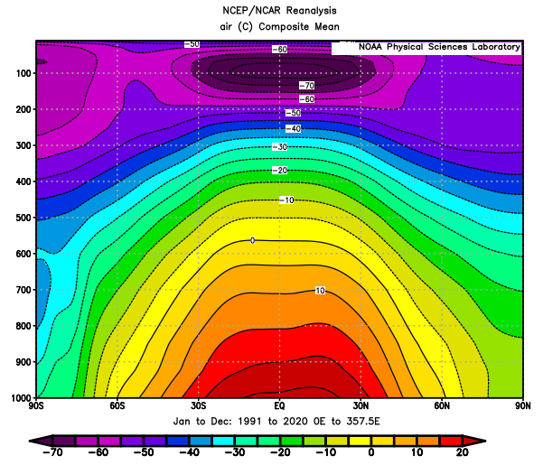
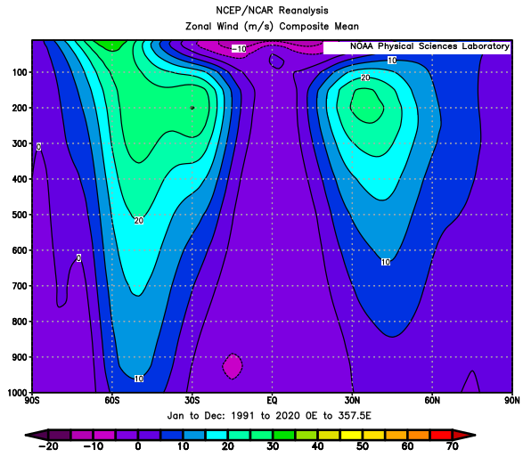
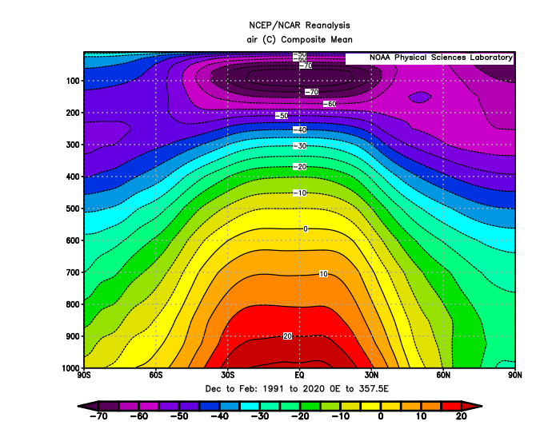
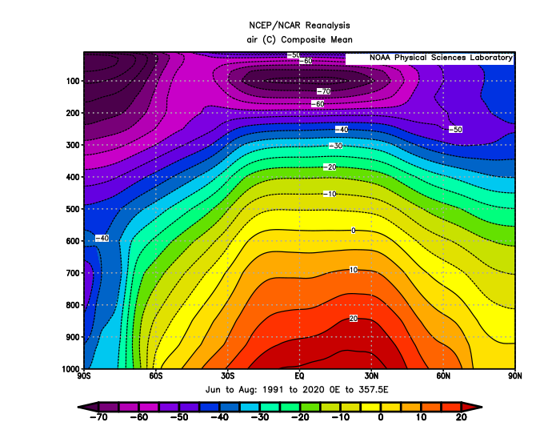
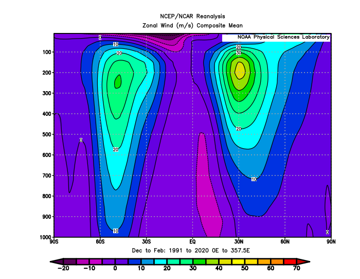
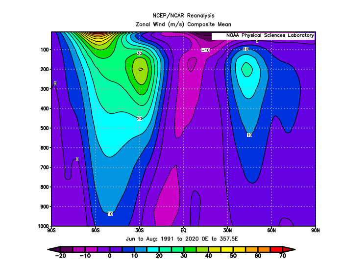

Section 10.4 Barotropy and baroclinity
\begin{equation}
\rho = \rho(p)\tag{10.4.1}
\end{equation}
Consider this restriction alongside the ideal gas law: Since \(\rho\) depends only on \(p\text{,}\) the ideal gas law implies that temperature \(T\) also depends only on \(p\text{,}\) i.e.,
\begin{equation}
T = T(p)\tag{10.4.2}
\end{equation}
Consequently, isobaric, isopycnic (constant density), and isothermal surfaces are parallel (i.e., stacked vertically) within a barotropic fluid, as shown in Figure 10.4.1 below. In other words, isobaric surfaces also are ispycnic and isothermal surfaces.

It follows that in a barotropic atmosphere, \(T\) does not vary along isobaric surfaces, i.e., \(\nabla_p T = \vec{0}\text{.}\) Consequently, (10.2.6)–(10.2.8) require that the geostrophic wind is not vertically sheared in a barotropic atmosphere, i.e., it is constant with height so \(-\dfrac{\partial \vec{v}_g}{\partial p} = \vec{0}\text{.}\) This means the thermal wind also is zero in a barotropic atmosphere: \(\vec{v}_T = \vec{0}\text{.}\) So in a barotropic atmosphere, the geostrophic wind can vary with horizontal position and time but not with height. In other words, at a given moment in time, the geostrophic wind is constant in the vertical over any location of interest within a barotropic atmosphere.
\begin{equation}
\rho = \rho(p,T)\tag{10.4.3}
\end{equation}
Consider this statement alongside the ideal gas law: Since \(\rho\) depends on both \(p\) and \(T\text{,}\) the ideal gas law implies that \(T\) depends on both \(p\) and \(\rho\text{,}\) i.e.,
\begin{equation}
T = T(p,\rho)\tag{10.4.4}
\end{equation}
This is a more complicated situation than for the barotropic fluid, and it means isobaric, isopycnic, and isothermal surfaces are not parallel in a baroclinic fluid, an example of which is shown in Figure 10.4.2 below. Consequently, in a baroclinic atmosphere, temperature can vary along isobaric surfaces, and so there is no restriction on the vertical shear of the geostrophic wind and the thermal wind: The geostrophic wind can vary with horizontal position and time as well as with height as long as temperature gradients are present along isobaric surfaces. Furthermore, the thermal wind will not be zero.

We can determine where the atmosphere is barotropic, approximately barotropic, or baroclinic using isobaric maps with isotherms contoured on them.
-
Where the atmosphere is barotropic, isotherms will not be drawn on the map since temperature is constant on the isobaric surface.
-
Where the atmosphere is approximately barotropic, few isotherms will be drawn on the map, and they will be spaced relatively far apart from each other.
-
Where the atmosphere is baroclinic, many isotherms will be drawn on the map since temperature varies across the isobaric surface, and they will be spaced relatively close to each other. An example of this case is shown in Figure 10.4.3 below.
Several isobaric maps for different pressure levels can be compared to determine the depth over which the atmosphere is barotropic, approximately barotropic, or baroclinic.

In general, baroclinity is maximized in the middle latitudes, while the tropics are approximately barotropic. Figure 10.4.4 below shows 1991–2020 annual average isotherms on the 500 hPa isobaric surface. In Figure 10.4.4, the horizontal temperature gradient is quite small in the tropics as depicted by the distant spacing of a couple of isotherms, indicating approximate barotropy. In contrast, the close spacing of many isotherms in the mid-latitudes indicates baroclinity. Baroclinity persists but decreases in the polar latitudes as indicated by the relatively more distant spacing of fewer isotherms. Similar patterns are apparent on isobaric maps for other pressure levels below the tropopause (not shown).

Figure 10.4.5 below shows a vertical cross-section of 1991–2020 annual average isotherms that also have been averaged longitudinally. As expected, the isotherms depict the warmest air on average in the tropics and the coldest air on average in the polar regions, through the depth of the troposphere, thus setting up a meridional temperature gradient in both the Northern Hemisphere and the Southern Hemisphere. Furthermore, the isotherms approximately parallel isobaric surfaces in the tropics but are steeply sloped in the middle latitudes and intersect isobaric surfaces up to about 200 hPa.

Given our previous discussion, it should be unsurprising that zonal winds on average are maximized in the middle latitudes as jet streams (narrow, horizontally-oriented fast-moving currents of air), with wind speed maxima on average around 200 hPa (Figure 10.4.6). This approximately is the pressure level above which the meridional temperature gradient reverses direction, with the coldest air in the stratosphere found above the tropics. Average zonal winds at other latitudes where baroclinity is smaller are weaker and closer to constant with height. Furthermore, average zonal winds in and around the jet streams are westerly, consistent with the westerly vertical wind shear of the geostrophic wind required by thermal wind balance in both the Northern and Southern Hemispheres.

Baroclinity is enhanced in the winter hemisphere relative to the summer hemisphere because the meridional temperature gradient is strengthened as the polar regions cool. Figure 10.4.7(a) below shows a vertical cross-section of 1991–2020 isotherms that have been averaged over December-January-February (DFJ) as well as longitudinally, and Figure 10.4.7(b) below shows a vertical cross-section of 1991–2020 isotherms that have been averaged over June-July-August (JJA) as well as longitudinally. The former three-month period is winter (summer) for the Northern (Southern) Hemisphere, and the latter three-month period is winter (summer) for the Southern (Northern) Hemisphere. As in the annual average shown in Figure 10.4.5, the isotherms approximately parallel isobaric surfaces in the tropics but are steeply sloped in the middle latitudes and intersect isobaric surfaces up to about 200 hPa. Furthermore, isotherms are sloped more steeply in the middle latitudes of the winter hemisphere relative to the summer hemisphere and intersect isobaric surfaces more frequently, indicating enhanced baroclinity.
Unsurprisingly, seasonally-averaged zonal winds indicate jet streams are faster in the middle latitudes of the winter hemisphere, as shown in Figure 10.4.8 below. Again, wind speed maxima are found around 200 hPa, above which the meridional temperature gradient reverses direction in the stratosphere.



